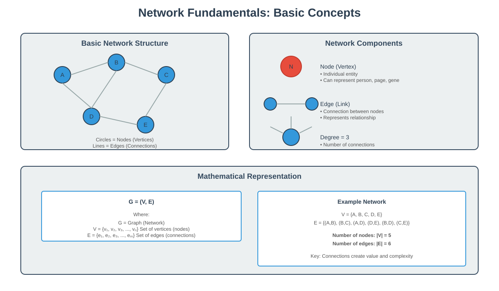
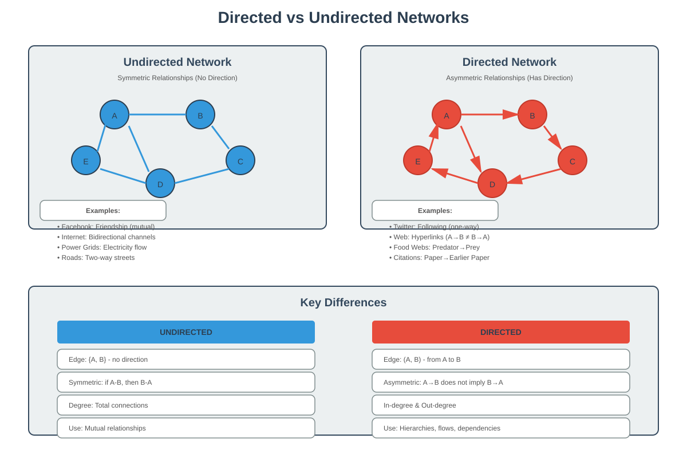
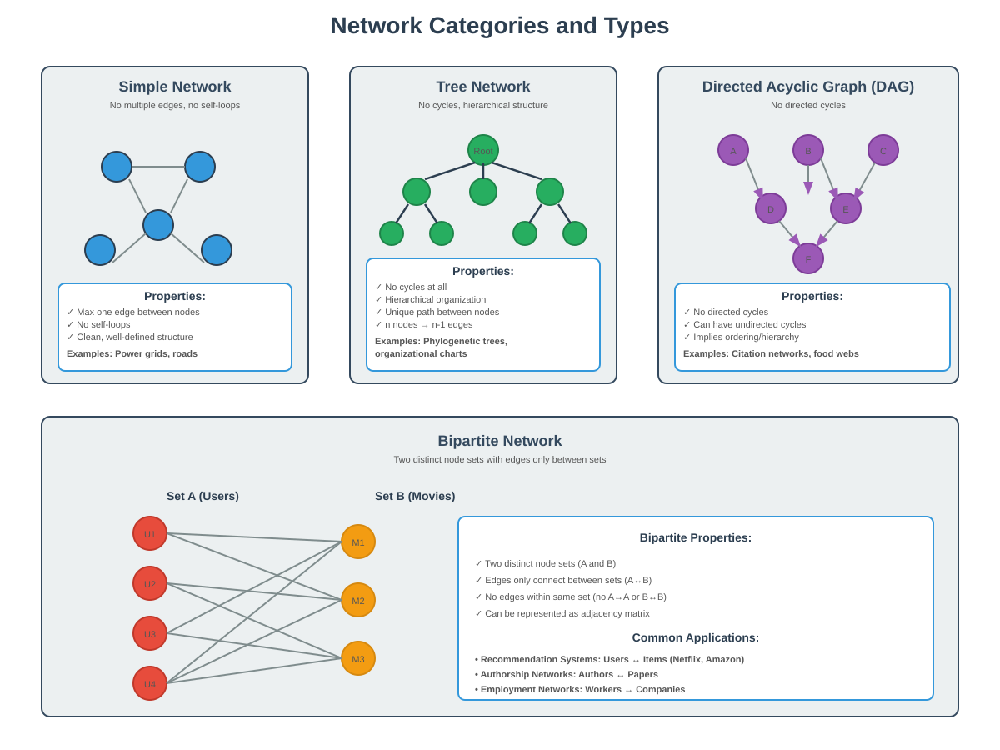
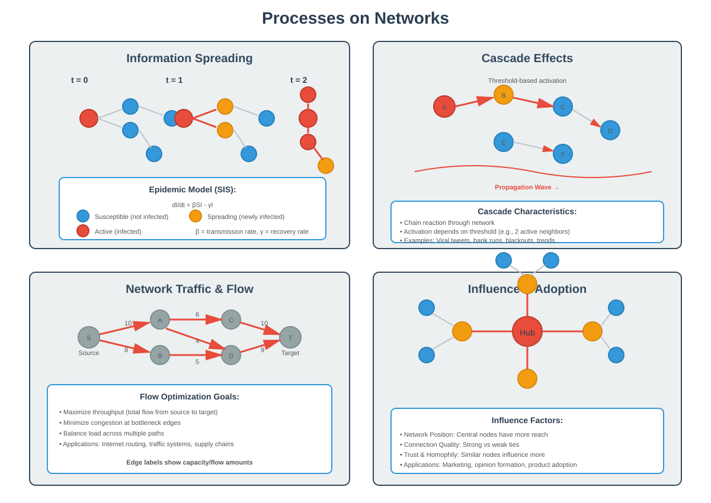
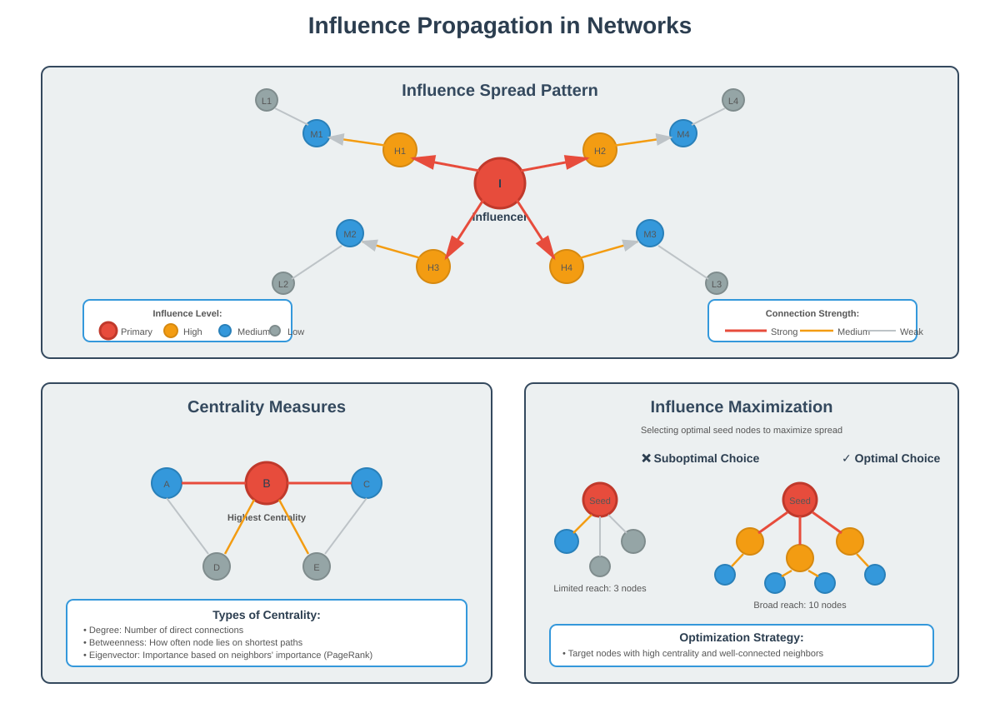

Introduction to Networks and Graph Theory
📚 Quick Navigation
- What is a Network?
- Network Definitions and Terminology
- Examples of Networks
- Types of Networks
- Network Properties
- Processes on Networks
- Applications and Use Cases
- Key Questions in Network Analysis
- Interactive Resources
- References & Further Reading
What is a Network?
At a high level, a network is a collection of interacting agents or elements. Networks are found everywhere because the most interesting phenomena arise from interactions between basic entities.
Core Concept:
Networks represent relationships and connections between entities. The power of a network comes not from the individual components in isolation, but from how they interact and connect with each other.

Key Insight:
- Individual elements in isolation have limited value
- The connections and interactions create emergent complexity
- Network structure fundamentally determines system behavior
Mathematical Definition:
Mathematically, a network is an object called a graph. A graph consists of:
- Nodes (Vertices): The individual elements or entities
- Edges (Links): The connections between nodes
- Network Structure: The pattern of how nodes and edges are arranged
Formula Representation:
G = (V, E)
Where:
- G = Graph (Network)
- V = Set of vertices (nodes)
- E = Set of edges (connections)
Network Definitions and Terminology
Understanding the precise terminology is essential for studying networks effectively.
Fundamental Terms:
- Node (Vertex): An individual entity in the network
- Edge (Link): A connection between two nodes
- Degree: The number of edges connected to a node
- Path: A sequence of edges connecting nodes
- Cycle: A path that starts and ends at the same node
Network Representation:
Networks can be represented using:
- Adjacency Matrix: A matrix A where A[i,j] = 1 if nodes i and j are connected
- Adjacency List: For each node, list all connected nodes
- Edge List: List of all edges as pairs of nodes
Adjacency Matrix Example:
A B C D
A [ 0 1 1 0 ]
B [ 1 0 1 1 ]
C [ 1 1 0 1 ]
D [ 0 1 1 0 ]
Interpretation:
- Rows and columns represent nodes
- 1 indicates presence of edge
- 0 indicates absence of edge
Examples of Networks
Networks appear across virtually every domain of study and everyday life.
🌐 Technological Networks
World Wide Web:
- Nodes: Web pages
- Edges: Hyperlinks between pages
- Type: Directed network (links have direction)
Internet:
- Nodes: Computers and servers
- Edges: Network protocol interactions
- Type: Undirected network (communication is bidirectional)
Road Networks:
- Nodes: Intersections
- Edges: Road segments
- Process: Traffic flow through the network
👥 Social Networks
Facebook:
- Nodes: People (users)
- Edges: Friendship relationships
- Type: Undirected network (friendship is mutual)
Twitter:
- Nodes: User accounts
- Edges: Following relationships
- Type: Directed network (following is not necessarily mutual)
Professional Networks:
- Nodes: Professionals or organizations
- Edges: Collaboration or business relationships
- Analysis: Career influence and information flow
🧬 Biological Networks
Neural Networks:
- Nodes: Neurons
- Edges: Synapses (connections)
- Process: Electrical signals and neural activity patterns
Gene Regulatory Networks:
- Nodes: Genes
- Edges: Regulatory effects between genes
- Purpose: Understanding gene expression control
Food Webs:
- Nodes: Species
- Edges: Predator-prey relationships
- Type: Directed network (direction shows who eats whom)
📚 Information Networks
Citation Networks:
- Nodes: Research articles
- Edges: Citations between papers
- Type: Directed acyclic graph (papers cite earlier papers)
Recommendation Systems:
- Nodes: Users and items (bipartite structure)
- Edges: Ratings or interactions
- Example: Netflix users and movies
Types of Networks
Networks can be categorized based on their structural properties and characteristics.

Directed vs Undirected Networks
Directed Networks:
Edges have a specific direction, representing asymmetric relationships.
Examples:
- World Wide Web: Website A can link to B without B linking back
- Twitter: User A can follow B without B following A
- Food Webs: Lion eats gazelle (not vice versa)
- Citation Networks: Paper A cites paper B (temporal direction)
- Gene Regulatory Networks: Gene A regulates gene B
Undirected Networks:
Edges have no direction, representing symmetric relationships.
Examples:
- Internet: Communication channels are bidirectional
- Facebook: Friendship is mutual
- Power Grids: Electricity flow is bidirectional
- Neural Networks: Synaptic connections
- Road Networks: Most roads allow traffic in both directions
Simple Networks vs Multi-graphs
Simple Networks:
- At most one edge between any two nodes
- No self-loops (edges connecting a node to itself)
- Common in power grids, transportation networks
Multi-graphs:
- Multiple edges allowed between nodes
- Self-loops permitted
- Common in neural networks, communication networks
Acyclic Networks
Trees:
Networks with no cycles in the underlying graph.
Characteristics:
- No closed loops
- Hierarchical structure
- Unique path between any two nodes
Examples:
- Phylogenetic Trees: Evolutionary relationships
- Organizational Charts: Corporate hierarchies
- File Systems: Directory structures
Directed Acyclic Graphs (DAGs):
Directed networks with no directed cycles.
Important Property:
Can have undirected cycles, but no directed cycles (cannot return to starting node by following directed edges).
Examples:
- Food Webs: Hierarchical predator-prey relationships
- Citation Networks: Papers cite earlier papers only
- Task Dependencies: Project management workflows
Bipartite Networks

Definition:
Nodes can be partitioned into two distinct sets, with edges only between the sets (not within sets).
Structure:
Set A Set B
User1 -------- Movie1
User2 -------- Movie2
User3 -------- Movie3
User4 -------- Movie4
Examples:
- Recommendation Systems: Users and items (Netflix, Amazon)
- Authorship Networks: Authors and papers
- Employment Networks: Workers and companies
- Dating Apps: Two groups of users seeking matches
Applications:
- Collaborative filtering for recommendations
- Matching problems and optimization
- Resource allocation
Network Properties
Understanding network properties helps characterize and compare different networks.
Degree Distribution
Node Degree:
The number of edges connected to a node.
For Directed Networks:
- In-degree: Number of incoming edges
- Out-degree: Number of outgoing edges
Degree Distribution:
The probability distribution of degrees across the network.
P(k) = Probability that a randomly chosen node has degree k
Common Patterns:
- Random Networks: Poisson distribution
- Scale-free Networks: Power-law distribution
- Regular Networks: All nodes have same degree
Centrality Measures
Different ways to measure node importance or influence:
Degree Centrality:
- Simply counts connections
- High degree = well-connected node
Betweenness Centrality:
- Measures how often a node lies on shortest paths
- Important for information flow control
Closeness Centrality:
- Average distance to all other nodes
- High closeness = can reach others quickly
Eigenvector Centrality:
- Importance based on importance of neighbors
- Used in Google's PageRank algorithm
Clustering and Communities
Clustering Coefficient:
Measures how much nodes tend to cluster together.
C = (Number of closed triangles) / (Number of possible triangles)
Community Structure:
- Groups of nodes more densely connected internally
- Useful for identifying functional modules
- Applications in social groups, biological pathways
Path Length and Connectivity
Average Path Length:
Average number of steps along shortest paths between all node pairs.
Diameter:
Maximum distance between any two nodes.
Small-World Property:
- Short average path lengths
- High clustering
- Common in social networks ("six degrees of separation")
Processes on Networks
While network structure is important, it's the processes occurring on networks that bring them to life.

Information Spreading
Viral Propagation:
How information, ideas, or content spreads through a network.
Key Factors:
- Network Structure: Connectivity patterns affect spread
- Influential Nodes: Some nodes are more effective spreaders
- Threshold Effects: Minimum exposure needed for adoption
Mathematical Model (SIS Model):
dI/dt = βSI - γI
Where:
- I = Number of infected/informed nodes
- S = Number of susceptible nodes
- β = Transmission rate
- γ = Recovery/forgetting rate
Cascading Effects
Definition:
When an action by one node triggers actions by connected nodes, creating a chain reaction.
Examples:
- Tweet Retweets: Content spreads through social network
- Bank Runs: Financial panic spreads
- Power Grid Failures: Cascade of blackouts
- Fashion Trends: Adoption spreads through social influence
Network Traffic and Flow
Flow Optimization:
- Routing information efficiently
- Managing congestion
- Balancing load across network
Applications:
- Transportation: Traffic routing
- Internet: Packet routing
- Supply Chain: Logistics optimization
Influence and Adoption
Influence Propagation:
How behaviors, opinions, or products spread through social influence.
Factors Affecting Influence:
- Network Position: Central nodes have more influence
- Trust Relationships: Strong ties vs weak ties
- Homophily: Similar nodes influence each other more
Applications and Use Cases
Networks provide powerful tools for solving real-world problems.
Social Media Marketing
Problem:
Maximize reach of advertising campaign with limited budget.
Network Approach:
- Identify influential users (high centrality)
- Consider not just direct connections but network effects
- Target users whose friends are themselves influential
Example: Concert Promotion
Instead of giving free tickets to person with most friends, give to someone whose friends are themselves well-connected, ensuring information spreads further.
Recommendation Systems
Collaborative Filtering:
- Use network of user-item interactions
- Recommend items liked by similar users
- Predict missing edges in bipartite network
Network-Based Approach:
- Netflix: Users and movies form bipartite network
- Amazon: Products linked by co-purchase behavior
- Spotify: Music recommendation based on listening patterns
Epidemic Control
Disease Spread Modeling:
- Model population as network
- Predict spread patterns
- Identify critical vaccination targets
Network Interventions:
- Vaccinate high-degree individuals (super-spreaders)
- Break key connections to slow spread
- Monitor network for early outbreak detection
Infrastructure Design
Optimization Goals:
- Minimize cost while ensuring connectivity
- Maximize robustness to failures
- Balance efficiency and redundancy
Applications:
- Power Grids: Reliable electricity distribution
- Transportation: Efficient road/rail networks
- Internet: Robust communication infrastructure
Link Prediction
Problem:
Predict future or missing edges in a network.
Applications:
- Social Networks: Friend recommendations
- Collaboration Networks: Suggest potential collaborators
- Knowledge Graphs: Complete missing information
Methods:
- Common neighbors approach
- Network proximity measures
- Machine learning on network features
Key Questions in Network Analysis

🎯 Structural Questions
Network Characterization:
- What are the distinctive features of this network?
- How does it compare to other network types?
- What properties make it unique?
Important Nodes and Edges:
- Which nodes are most influential?
- Which edges are critical for connectivity?
- How do we define and measure importance?
Community Detection:
- Are there distinct groups or clusters?
- How do communities interact?
- What defines community boundaries?
📊 Process Questions
Information Diffusion:
- How does information spread through the network?
- Which nodes are most effective for spreading?
- What factors accelerate or inhibit spread?
Influence Mechanisms:
- How do neighbors influence each other?
- What is the strength of influence effects?
- Can we measure peer pressure quantitatively?
Cascade Prediction:
- Will a cascade occur?
- How far will it spread?
- Can we predict cascade magnitude?
🔮 Prediction Questions
Network Evolution:
- How will the network change over time?
- Which new edges are likely to form?
- Can we predict network growth patterns?
Missing Data Inference:
- Can we recover the complete network from partial data?
- How do we infer missing connections?
- What confidence do we have in predictions?
Future Outcomes:
- Which nodes will be affected by a process?
- What is the probability of infection/adoption?
- How long until equilibrium is reached?
🛠️ Design Questions
Network Optimization:
- How do we design efficient networks?
- What structure maximizes desired properties?
- How do we balance competing objectives?
Intervention Strategies:
- Where should we intervene for maximum effect?
- Which nodes should we target?
- How do we optimize resource allocation?
Interactive Resources
📊 Visualization Tools
Network Analysis Platforms:
- Gephi: Open-source network visualization
- Cytoscape: Biological network analysis
- NetworkX: Python library for network analysis
💻 Code Examples
Google Colab Notebooks:

Basic Network Analysis:
import networkx as nx
import matplotlib.pyplot as plt
# Create a simple network
G = nx.Graph()
G.add_edges_from([(1,2), (2,3), (3,4), (4,1), (1,3)])
# Calculate centrality measures
degree_cent = nx.degree_centrality(G)
between_cent = nx.betweenness_centrality(G)
# Visualize
nx.draw(G, with_labels=True, node_color='lightblue',
node_size=1500, font_size=16)
plt.show()
🤖 Related Models
Hugging Face Models:
📄 Research Papers
ArXiv Papers:
- Network Science Fundamentals
- Community Detection in Networks
- Influence Maximization in Social Networks
References & Further Reading
📚 Foundational Texts
Books:
- Networks, Crowds, and Markets by Easley and Kleinberg (2010)
- Comprehensive introduction to network economics and social networks
-
Available free online from Cornell University
-
Network Science by Albert-László Barabási (2016)
- Modern approach to network science
-
Interactive online version available
-
Networks: An Introduction by Mark Newman (2018)
- Mathematical foundations of network analysis
- Comprehensive coverage of network theory
🔬 Key Research Papers
Seminal Papers:
-
Watts, D.J., & Strogatz, S.H. (1998). "Collective dynamics of 'small-world' networks." Nature, 393(6684), 440-442.
-
Barabási, A.L., & Albert, R. (1999). "Emergence of scaling in random networks." Science, 286(5439), 509-512.
-
Newman, M.E.J. (2006). "Modularity and community structure in networks." Proceedings of the National Academy of Sciences, 103(23), 8577-8582.
-
Granovetter, M. (1973). "The strength of weak ties." American Journal of Sociology, 78(6), 1360-1380.
🌐 Online Resources
Educational Platforms:
-
Network Science by Albert-László Barabási - Free online textbook
-
Stanford CS224W: Machine Learning with Graphs - Course materials and lectures
-
Complexity Explorer - Free online courses on network science
Software and Tools:
-
NetworkX Documentation - Python library for network analysis
-
igraph - Network analysis library for R, Python, and C
-
SNAP: Stanford Network Analysis Platform - Large-scale network analysis
📊 Datasets
Network Data Repositories:
Summary
Networks provide a powerful framework for understanding complex systems across diverse domains. By studying network structure, we can:
- Identify influential nodes and critical connections
- Predict how processes spread through networks
- Design efficient and robust systems
- Make informed decisions about interventions
The key insight is that interactions between components often matter more than the components themselves. Whether analyzing social media, biological systems, or infrastructure, network thinking reveals patterns and principles that apply across domains.
Next Steps:
- Explore specific network metrics and measures
- Study random network models and their properties
- Learn about advanced topics like community detection
- Apply network analysis to real-world datasets
This documentation is designed for AI learners, engineers, and researchers. For questions or contributions, please refer to the project repository.